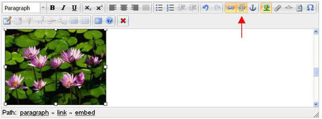
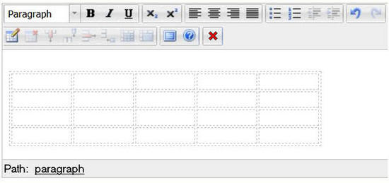

The toolbar
The OE toolbar contains tools for editing the content that is being displayed in the text area. The buttons are very similar to those found in many word processors. For example, if you select a part of the text and click the "Bold" button, the selected text will become bold (the OE will take care of inserting the corresponding XML tag in the background). The following screenshot shows the different buttons.
You will notice that the toolbar has a couple of new buttons compared to the OE toolbar 4.x. One of the buttons is for images and was simply added to make it more intuitive for new users. The difference between the image and the object button (the "paperclip") is the content that is presented.
The OE toolbar is located above the OE text area. It is divided into seven areas:
For additional details please also be sure to check sub-topics:
The following illustration provides a better overview of the different tools/buttons.
Please refer to the following sections for detailed explanations of the different tools/buttons.
Please note that for the Online Editor to work properly with Internet Explorer 6.0, it is required to have a minimum browser window height (actually, the inner window viewport height) of 670 pixels. This can be easily achieved on small resolution screen by using the fullscreen mode of Internet Explorer accessible through the <F11> key.
Issues arise when using Internet explorer 6 and Online Editor 5.0.2 in an admin siteaccess. When you are using Online Editor in full-screen mode the toolbar at the top isn't visible, so there is no way to scroll or go back to normal editing mode.
Active and inactive buttons
The toolbar buttons may be active or inactive.
Active buttons allow you to perform an operation at the current location / on the current item. An active button changes its border and background colors.
A button is usually inactive if its operation is not allowed at the moment (for the current element). Inactive buttons have a greyed out background and do not respond when clicked. For example, the list buttons are inactive when you work with headings. The reason for this is that a heading can never contain a list item.
Note that a tooltip will always be displayed when the mouse pointer is hovering over the button, this doesn't change if the button is inactive.
The screenshot above shows the difference in appearance between active and inactive buttons. The buttons will be (in)active depending on the location of the cursor in the Online Editor text area.
Tooltips
Each button has a tooltip that will be displayed when the mouse pointer is hovering over the button itself. Tooltips are used to give further information about the action that the button will perform when clicked. The screenshot below will give an example.
Toolbar buttons that have been temporarily disabled still have functioning tooltips, but you can't click the buttons as shown in the screenshot bellow..
Text styles
The "Text style" tool is a dropdown menu that allows you to create formats and headings. The list of choices contains different text styles. While "Paragraph" means simple/normal text, "literal" will place the text in a literal box and the other six styles are headings ranging from level 1 to level 6. Headings are incompatible with all other XML tags. This means that a heading can not be a link, it can not be bold, italic, it can not be placed in a list, etc. In fact, the only thing that headings are compatible with is special characters.
Changing the text style
The following example demonstrates how the text style of the current element can be changed. We will change the style for "Getting Started" from Paragraph to Heading 1.
Put the cursor somewhere inside the target text, which then will become the current element. Alternatively you can also select the text so that it will become a selected element. The "Paragraph" tag will appear in the XML tag path and in the "Format/Text Style" dropdown.

Change the text style by selecting "Heading 1" from the list. You should be able to see the result immediately.
Choosing text styles before writing
The following example demonstrates how to set the text style before typing in something. Let's say that we want to write "Chapter 3" and then type up a small paragraph of text.
- Create a new paragraph at the location where you wish to add the new chapter.
- Open the dropdown list of text styles and choose "Heading 1". The empty paragraph will be transformed into a heading. The "header 1" tag will appear in the XML tag path.
Type in "Chapter 3". It will appear in accordance with the selected text style.

Press the "Enter" key to terminate the heading. At this point, the text style will be automatically set to "Paragraph" so that you can continue with writing simple/normal text. The "paragraph" tag will appear in the XML tag path.
Type in the paragraph for this chapter.
Classified headings
To set a "class" parameter for heading, right click somewhere inside it and click on the "header" tag in the XML tag path. A non-modal dialog will appear. Select the desired class from the dropdown list and click the "OK" button.
"Undo" and "Redo" buttons
The "Actions" area of the OE toolbar contains two buttons which can be used to "Undo" or "Redo" the last operations. These buttons work in a similar way as in popular word processing applications. The following screenshot shows the "Undo" button. It can be used to reverse the last operation and/or remove the last entry that was typed in. Keep clicking this button in order to reverse more than just the last operation.
The following screenshot shows the "Redo" button. It can be used to reverse the last "Undo" operation. Keep clicking this button in order to reverse more than just the last operation.
Undo support and browser differences
Please note that some operations can not be reversed. In addition, the undo/redo functions work differently in Internet Explorer and Mozilla based browsers. The following table reveals the possibilities and the differences.
| Operation | Google Chrome | Internet Explorer | Mozilla Firefox |
|---|---|---|---|
| Text writing |
Undo button |
Undo button |
Undo button |
| Create a new paragraph |
Undo button |
Undo button |
Undo button |
| Create a new line |
Undo button |
Undo button |
Undo button |
| Set class for a paragraph |
Undo button |
Undo button |
Undo button |
| Set text style |
Undo button |
Undo button |
Undo button |
| Bold formatting |
Undo button |
Undo button |
Undo button |
| Italic formatting |
Undo button |
Undo button |
Undo button |
| Set class for a bold/italic element |
Undo button |
Undo button |
Undo button |
| Click the "Numbered list" button |
Undo button |
Undo button |
Undo button |
| Click the "Bullet list" button |
Undo button |
Undo button |
Undo button |
| Click the "Decrease indent" button |
Undo button |
Undo button |
Undo button |
| Click the "Increase indent" button |
Undo button |
Undo button |
Undo button |
| Set class for a numbered/bullet list |
Undo button |
Undo button |
Undo button |
| Insert an object |
Undo button |
Undo button |
Undo button |
| Insert a link |
Undo button |
Undo button |
Undo button |
| Change the link's properties |
Undo button |
Undo button |
Undo button |
| Remove a link |
Undo button |
Undo button |
Undo button |
| Insert an anchor |
Undo button |
Undo button |
Undo button |
| Change the anchor's name |
- |
Undo button |
Undo button |
| Insert an inline custom tag |
Undo button |
Undo button |
Undo button |
| Change properties of an inline custom tag |
Undo button |
Undo button |
Undo button |
| Remove an inline custom tag |
Undo button |
Undo button |
Undo button |
| Insert a block custom tag |
Undo button |
Undo button |
Undo button |
| Change properties of a block custom tag |
Undo button |
Undo button |
Undo button |
| Remove a block custom tag |
Undo button |
Undo button |
Undo button |
| Insert a literal text |
Undo button |
Undo button |
Undo button |
| Set class for a literal text |
Undo button |
Undo button |
Undo button |
| Remove a literal text |
Undo button |
Undo button |
Undo button |
| Insert a special character |
Undo button |
Undo button |
Undo button |
| Create a table |
Undo button |
Undo button |
Undo button |
| Change the table properties |
Undo button |
Undo button |
Undo button |
| Change the cell properties |
Undo button |
Undo button |
Undo button |
| Create table headers |
Undo button |
Undo button |
Undo button |
| Set class for a table header cell |
Undo button |
Undo button |
Undo button |
| Remove the entire table |
Undo button |
Undo button |
Undo button |
| Insert a table row |
Undo button |
Undo button |
Undo button |
| Click the "Delete row" button |
Undo button |
Undo button |
Undo button |
| Remove a table row without using the OE toolbar and context menu |
Undo button |
Undo button |
Undo button |
| Insert a table column |
Undo button |
Undo button |
Undo button |
| Click the "Delete column" button |
Undo button |
Undo button |
Undo button |
| Remove a table column without using the OE toolbar and context menu |
Undo button |
Undo button |
Undo button |
| Split a table cell |
Undo button |
Undo button |
Undo button |
| Merge the table cells |
Undo button |
Undo button |
Undo button |
Format buttons
The "Format" area of the toolbar contains three buttons used for bold, italic and underline text formatting.
When generating XHTML code, the system will use "strong" for bold and "emphasize" tags for italic elements. This behavior is dictated by the following templates:
- <eZ_Publish_root>/ezpublish_legacy/design/standard/templates/content/datatype/view/ezxmltags/strong.tpl
- <eZ_Publish_root>/ezpublish_legacy/design/standard/templates/content/datatype/view/ezxmltags/emphasize.tpl
The underline text formatting is a custom tag. It will be shown as "custom.underline". For more information regarding custom tags, visit custom tags.
Bold, italic and underline text
The "Bold" button will make the selected text bold. If the selected text is already bold, this button will do the opposite and thus the bold formatting will be removed.
The "Italic" button will make the selected text italic. If the selected text is already italic, this button will do the opposite and thus the italic formatting will be removed.
The "Underline" button will underline the selected text. If the selected text is already underlined, this button will do the opposite and remove the underline formatting.
It is possible to set the text style (bold/italic/underline) before typing in the actual text that should be bold and/or italic.
Please note that if no text is selected, the "Bold", "Italic" and "Underline" buttons will change the word where the cursor is currently positioned only if you are using Internet Explorer. If you are using another internet browser (Google Chrome, Mozilla Firefox,...) nothing will change. However, all browsers pass the formatting settings on to the next line/paragraph. For example, if you are writing bold text and then press the "Enter" key, the new paragraph that is started will be bold.
Example of usage
The following example demonstrates how you can use the "Bold" and the "Italic" buttons.
Select another part of the text and click the "Italic" button.
The selected text fragment will become italic.
Put the cursor inside a bold text. The "Bold" button will change its appearance indicating that the text at the current position is bold. The "paragraph" and "strong" tags will appear in the XML tag path. If you would put the cursor inside an italic text, the "Italic" button would indicate that the text at the current position is italic and the "paragraph" and "emphasize" tags would appear in the XML tag path. If you would put the cursor inside an underlined text, the "underline" button would indicate that the text at the current position is underlined and the "paragraph" and "custom.underline" tags would appear in the XML tag path.
- Select a piece of the bold text and click the "Italic" button.
The selected text will become both bold and italic. - Create a new text paragraph starting with a bold sentence. Press the "Enter" key to create a new empty paragraph and then click the "Bold" button. The "Bold" button will change its appearance because the bold formatting is currently switched on.
Type in a sentence and click the "Bold" button once again to switch the bold formatting off. Now you can continue typing in non-formatted text.
Classified headings
To set a "class" parameter for bold/italic text, click on the tag in the XML tag path. A non-modal dialog will appear. Select the desired class from the dropdown list and click the "OK" button.
Please note that right clicking on the word and selecting "Properties" from the context menu is no longer available in OE 5.x.
Numbered and bullet lists
The "Numbered list" button allows you to create numbered (ordered) lists.
The "Bullet list" button allows you to create bullet (unordered) lists.
The "Decrease indent" button allows you to decrease the level of indentation for list items.
The "Increase indent" button allows you to increase the level of indentation for list items.
Please note that it is possible to classify the lists, but not the list items themselves.
In the XML tag path you will see tags like "unordered list", "ordered list" and "list item". When generating XHTML code, the system will use the "ol" tag for numbered lists, "ul" tag for bullet lists and the "li" tag for list items. The output is controlled by the following templates:
- <eZ_Publish_root>/ezpublish_legacy/design/standard/templates/content/datatype/view/ezxmltags/ol.tpl
- <eZ_Publish_root>/ezpublish_legacy/design/standard/templates/content/datatype/view/ezxmltags/ul.tpl
- <eZ_Publish_root>/ezpublish_legacy/design/standard/templates/content/datatype/view/ezxmltags/li.tpl
Creating a numbered list
Create a new empty paragraph and click the "Numbered list" button. The empty paragraph will be transformed to an empty numbered list item. Write the text for the list item and press the "Enter" to create another empty list item. Continue adding new list items in this way. To end a numbered list, press "Enter" inside an empty list item.
Creating a bullet list
Create a new empty paragraph and click the "Bullet list" button. The empty paragraph will be transformed to an empty bullet list item. Write the text for this list item and press the "Enter" key to create another empty list item. Continue adding new list items in this way. To end a bullet list, press "Enter" inside an empty list item.
Transforming a numbered list into a bullet list
Select all the list items and click the "Bullet list" button. The numbered list will be transformed into a bullet list. Please note that when using Internet Explorer, you may also put the cursor somewhere inside the list (or select only a part of the list) and then click the "Bullet list" button.
Transforming a bullet list into a numbered list
Select all the list items and click the "Numbered list" button. The bullet list will be transformed into a numbered list. Please note that when using Internet Explorer, you may also put the cursor somewhere inside the list (or select only a part of the list) and then click the "Numbered list" button.
Transforming paragraphs into list items
To transform a paragraph into a numbered list item, position the cursor inside the paragraph (or select multiple paragraphs) and click the "Numbered list" button.
To transform a paragraph into a bullet list item, position the cursor inside the paragraph (or select multiple paragraphs) and click the "Bullet list" button.
Transforming list items into paragraphs
To transform a numbered list item into a paragraph, position the cursor inside the list item (or select multiple list items) and click the "Numbered list" button.
To transform a bullet list item into a paragraph, position the cursor inside the list item (or select multiple list items) and click the "Bullet list" button.
Transforming a numbered list item into a bullet list item
Please note that this feature only works in Mozilla based browsers and Google Chrome but does not work in Internet Explorer. In Internet Explorer the list will completely transform to a bullet list, not just one item.
To transform a numbered list item into a bullet list item, position the cursor inside the list item (or select multiple list items) and click the "Bullet list" button. Please refer to the example below.
Example
The following screenshot shows the numbered list containing six list items.
Let's transform the third list item into a bullet list item. To do this, position the cursor inside the third list item and click the "Bullet list" button. The following three lists will be created:
- A numbered list containing two list items.
- A bullet list containing only one list item.
- A numbered list containing three list items.
Please note that these lists will be independent and not nested (see the screenshot below).
If you want the entire list to transform from numbered list to bullet list select the entire list before clicking the "bullet list" button.
Transforming a bullet list item into a numbered list item
Please note that this feature only works in Mozilla based browsers and Google Chrome but does not work in Internet Explorer. In Internet Explorer the list will completely transform to a numbered list, not just one item.
To transform a bullet list item into a numbered list item, position the cursor inside the list item (or select multiple list items) and click the "Numbered list" button.
If you want the entire list to transform from bullet list to numbered list select the entire list before clicking the "Numbered list" button.
List items containing multiple lines
To create a new text line inside a list item (without creating a new list item) hold down the "Shift" key and press the "Enter" key. The next example demonstrates how this can be done.
- The following screenshot shows the bullet list containing six list items.
- Type in some text and continue adding new lines in the same way.

Although headings are not allowed inside lists, you can use bold, italic and underline formatting. For example you can create a structure with mixed text styles.
Nested lists
The "Decrease indent" and "Increase indent" buttons allow you to decrease/increase the indentation for the current list item. This makes it possible to create nested lists and further modify their structure. These buttons are inactive until you position the cursor inside a list item or select one of the list items (or just select a part of a list item). Please refer to the next example for details.
Example
Type up five short paragraphs. Select all of them and click the "Numbered list" button.
- Press the "Enter" key inside an empty list item to end the numbered list. In our example we pressed "Enter" after creating an eighth item. A new paragraph is now created.
- The inner list contains only one list item. Add a new item to this list by pressing the "Enter" key and type something.

Select both items of the inner list and click the "Bullet list" button.
The inner list will become a bullet list.
Classified lists
It is possible to set the "class" parameter for numbered/bullet lists. To do this, position your cursor somewhere inside the list and select its list tag ("ordered list" or "unordered list") in the XML tag path. A non modal dialog will appear where you can select the desired class name from the dropdown list and click the "OK" button.
Please note that it is no longer possible to right click on a list item and select "Properties" from the context menu. Although this feature was available in OE 4.x, it is no longer supported in OE 5.x.
The "Image" and "Object" buttons
The content engine of eZ Publish allows you to create relations between different objects. For example, it is possible to relate an image object to an article. The Online Editor makes it possible to insert related objects into the XML structure so that they become embedded objects. This functionality can be used to embed any type of object in the XML.
New in OE 5.x is the "Image" button, which was added next to the familiar paperclip or "Object" button. The only difference between the "Image" (tree) and the "Object" (paperclip) button is the content that is presented.
The "Image" button allows you to insert new and edit existing embedded objects and looks like this:
The "Object" button allows you to insert new and edit existing embedded objects and looks like this:
Embedded objects are inserted as block elements. A block element always begins on a new line when it is displayed. It exists in its own virtual box and is always followed by a carriage return (like if someone hits the "Enter" key after inserting the object). Although the OE sometimes displays images as if they were inline elements, the images will become block elements in the resulting XHTML.
Please note that the system will use the "embed" XML tag for embedded objects.
Inserting an object or image
Position the cursor at a location where you wish to add an object/image. Click the "Object" or "Image" button. Note that you can no longer right click and choose the "Insert object" item from the context menu, which was possible in OE 4.x.
Keep in mind that it is not possible to insert an image directly inside the text without breaking it. Neither can an image be inserted in the same line as a heading. It is recommended to create a new paragraph before inserting an object or image.
You will see a non-modal dialog called "Upload new Image/Object", which gives you the possibility to upload a new image or select one from a list of related objects shown at the bottom. If there are no relations, the list will be empty as shown in the screenshot below for an image. Note that there is also an "Upload", "Search", "Browse" and "Bookmarks" tab.
If the necessary object is not in the list of related objects, perform the instructions of the subsection "Adding a related object to the list", otherwise select the desired object from the list and specify its properties. If the image you want is in the related images list (see screenshot below), you can select it.
If you select an image from the related images list, the following dialog box will appear which will allow you to specify the properties of that image.
The default properties for embedding an Image object are given. These attributes generally correspond to the parameters of the "embed" tag, but these can easily be changed. The built-in attributes are "Relation", "View", "Size", "Class", "Alignment", "Inline", "Offset" and "Limit", which are described further in the text.
Set the desired properties and click "OK". The inserted object will appear in the OE text area. Image objects will presented as images, all other objects will appear with a special icon (a paperclip) and the title of the object. An example for the object "a text":
Size
This attribute is available for image objects and it allows you to choose a size for the embedded image. The default sizes are the following:
- reference (600x600 px)
- small (100x100 px)
- tiny (30x30 px)
- medium (200x200 px)
- large (300x300 px)
- rss (88x31 px)
- multiuploadthumbnail 100x80
- original
The sizes can be selected from a dropdown list as shown here:
Note that "reference", "small", "tiny", "medium", "large", "rss" and "Multiuploadthumbnail" may decrease the size of the image but they will not increase it. "Original" will keep the original image size. These default sizes are specified in the "image.ini" configuration file and can be re-configured from within a configuration override for this file. More information about image variations can be found in the reference documentation of the "Image" datatype.
Alignment
This attribute allows you to choose the positioning of the embedded object. The choices are "none", "center", "left" and "right". The selection will result in a CSS class that will be used in the resulting XHTML.
Inline
It is possible to choose if an image or object is presented inline or not.
Class
This parameter allows you to specify a custom stylesheet that will be used for the embedded object.
View
You can choose the view that should be used to render the embedded object. For example, if you insert an image object, the "embed" view will show the image along with its caption, the "full view" will display additional information such as the object name, current version, etc.
Embedded object properties
You can edit the properties of the embedded objects. To do this, click on an embedded object in order for it to become a selected element (you will notice that it will become encapsulated in a rectangular frame). Click the "Object" button. The dialog box described earlier will appear and the currently selected object will be highlighted in the list of related objects. Here you can change the properties or select another related object for inserting instead of the current one. The changes will take effect after clicking the "OK" button.
Please note that you can no longer edit the embedded object by right clicking on it and choosing the "Properties" item from the context menu, which was possible in OE 4.x. This feature is no longer supported in OE 5.x.
Adding a related object to the list
If the needed or desired object is not in the list of related objects, you should add it by using the "upload local file" button (under the "Upload"-tab). It is possible to either add/relate an already existing object or upload a new file to use as a related object. You can also use the "Search", "Browse" and "Bookmarks" tabs to locate already existing objects.
Uploading new objects
The "Upload local file" button makes it possible to create a new related object from a local file. Select the image/object you wish to upload (you can browse your computer by clicking the "Browse..." button), name the image/object and click the upload button. This is shown in the screenshot below.
After clicking the "Upload local file" button the system will upload your file, place it at the selected location and relate it to the object that is currently being edited. Once this is done, the uploaded file (object or image) is ready for use. Please refer to the "Inserting an object" section for details.
Adding existing objects
The "Search", "Browse" and "Bookmarks" tabs make it possible to relate existing objects to the one which is currently being edited. When you select one of these tabs, one of the following non-modal dialog will be shown.
- The Search-tab allows you to search your site for images:
- The Browse-tab allows you to browse the nodes located inside the "Content structure" tree of your site. The dialog box is shown in the following screenshot:
Use the list to select the node which encapsulates the object that you want to use. You can navigate the list by clicking on the names of the nodes. If the desired node is located outside the "Content structure" tree, simply select one of the links presented above ("Media", "Users" and the current article) to change the location. This will allow you to, for example, switch to the "Media library" to select images located there. By clicking on the preview button next to the file, you can view a small version of the image/object. When you're finished selecting the desired object, check the checkbox next to the object. This will then bring you to the properties box of the image/object, shown here:
After you click "OK", the system will relate the selected object to the one that is currently being edited and it will be added to the OE text area.
- The following screenshot shows the Bookmarks-tab:
It is not necessary to use the Online Editor every time you wish to add or remove related objects. The "Related objects" window located towards the bottom of the object edit interface can also be used to view and manage the object relations. This interface is shown in the screenshot below.
The "Link" button
The "Link" button allows you to create new and edit existing hyperlinks. This button is located in the "Special Tools" area of the OE toolbar and looks like this:
The "Unlink" button allows you to remove links and looks like this:
When generating XHTML code, the system will use the "link" tag for hyperlinks. This behavior is dictated by the "<eZ_Publish_root>/ezpublish_legacy/design/standard/templates/content/datatype/view/ezxmltags/link.tpl" template.
Creating a hyperlink
- Type or select the text you wish to change into a hyperlink and click the "Link" button. Please note that you can no longer right click and select the "Insert link" item from the context menu, which was possible in OE 4.x. After clicking on "Link", you will see a non-modal dialog called "New tag", which shows the link properties (Href (type and URL), View, Target, Class, Title and ID). The following screenshot shows this dialog. The different properties are described below.
Specify the link properties and click the "OK" button. The inserted link will appear in the OE text area (underlined).
Href
The Href attribute defines the type and location of your link. The attribute is accompanied by two lines. The first line allows you to specify the type through a dropdown. There are five common types for external links (http, mail, file, ftp and https), three special types for internal links (ezobject, eznode and anchor) and the "other" type. The internal links make it possible to create links to objects, anchors and nodes that are in the system. This first line is followed by a "Search", "Browse" and "Bookmarks" icon. Clicking on one of them will open a dialog that will allow you to select an object which already exist in the system. It is very similar to the "Choose objects" window described in the subsection "Adding a related object to the list". After selecting the necessary object, click the "OK" button and the address will appear in the URL field, for example, "eznode://114".
In the second line you can specify a valid external or internal URL address and this is a required parameter. After choosing a link type, the type will appear in the URL field (for example "http://"). If you have chosen "ezobject", "eznode" or "anchor" you can also use the "Search", "Browse" or "Bookmarks" button to search your site.
Please note that the type dropdown is optional, you do not need to use it, you can type in the link address directly into the URL field. The following screenshot shows the dialog "New <link> tag" and the dropdown list for the "Href" attribute.
View
The view attribute lets you define if the link is presented full or in line. If this attribute is not specified, the default view is used.
Target
With this attribute you can select if the link will be opened in a new browser window / tab.
Class
You can specify a CSS class that should be used when the link is rendered. For example, a custom class can be used to display the link using a specific color.
Title
You can specify a short title text. It will appear as a tooltip when the mouse pointer is hovering above the link. The tooltips will be displayed on the site pages.
ID
You can assign a unique identifier to a link (it will become the ID attribute in the resulting XHTML code).
Classified links
To set the "class" parameter for a link, simply edit its properties - this is described in the next section.
Link properties
To view or edit a link's properties, position the cursor inside a linked text and click the "Link" button or click on the "Link" tab in the XML tag path. Note that it is no longer possible to right click on the linked text and choose the "Link Properties" item from the context menu. This feature is no longer supported in OE 5.x.
You will see a non modal dialog called "edit tag" which shows the link properties. It is very similar to the "new tag" window that was described in the previous section. Your changes will take effect after clicking the "OK" button.
Removing a hyperlink
To remove a link along with its text, you can simply delete the link text in the OE text area. If you want to remove the link but keep the text, click on the "Unlink" button in the OE toolbar.
Objects as links
An embedded object can also be a hyperlink. In this case and if the object supports this feature, the link will be included in the resulting XHTML. For example, it is possible to link up image objects, manipulate and remove the link(s) - these features are explained in the following example.
Example
- Click on the embedded image object. It will become a selected element.
- Click the "Link" button.
- The "new <link> tag" window will be displayed.
- Select the image by clicking on it and then click the "Link" button or the "link" tag in the XML tag path to view or edit the link properties.
- You will see a non modal dialog called "edit tag", which is very similar to the "new tag" dialog. This dialog allows you to edit the link properties. For example, you can use it to change the link URL to "http://ez.no/doc" and the title to "eZ website". Click the "OK" button to apply the changes.
- To remove the link from the image, right click the image and select the "Remove Link" item from the context menu.

The "Anchor" button
A hyperlink may refer not only to a whole document but also to a specific part of the document itself. In order to link to a part of a document you need to mark the fragment as an anchor before you can link to it.
The "Anchor" button is located in the "Special Tools" area of the OE toolbar. The following image reveals what this button looks like.
Inserting an anchor
Position the cursor at a place where you wish to add an anchor and click the "Anchor" button. You will see a non modal dialog called "new tag". This dialog is shown in the screenshot below.
Specify the anchor name and click the "OK" button. The inserted anchor will appear as a special icon in the OE text area. The following image shows an example:
Please note that the anchor names must be unique. In the XML tag path the "anchor#<anchor name>" tag will be used. So in the above used example the tag will be "anchor#Online-Editor". This behavior is dictated by the "<eZ_Publish_root>/ezpublish_legacy/design/standard/templates/content/datatype/view/ezxmltags/anchor.tpl" template.
Changing the anchor's name
- Click on the anchor in the OE text area so that it will become a selected element.
- Click the "Anchor" button or the "anchor" tag. The properties dialog will be displayed where you can change the anchor name. Click the "OK" button to save changes.
Linking to an anchor
As mentioned before, in order for you to link to a anchor you need to have a anchor to link to. So if the anchor does not exist yet, you need to create it first. Once you have the anchor you can link to it like this:
- Select the text you would like to link the anchor to and click on the "Link" icon in the OE toolbar.
- The "New <link> tag" dialog will appear where you can specify the properties of the link. Select "Anchor" in the dropdown list of the Href attribute. A "#" will appear in the URL/location line. Type the name of the anchor behind this "#" or use the "Search" or "Browse" button to select one. Click "OK". The screenshot bellow shows an example.
Using anchors together with internal links
It is also possible to link to a specific part of an object which is referred to by an internal link through the "eznode://" or the "ezobject://" notation. The following example explains how this can be done. Like the example's given above, let's say that you have an anchor "Online Editor" inside an article called "Getting Started", you can insert a link directly to the "Online Editor" position in the "Getting Started" article from another article called "Using Online Editor":
- Open the "Using Online Editor" article for editing and create a link using the "Link" button.
- In the "New <link> tag" dialog choose either "eznode:" or "ezobject:". Click the "Browse" button or if you know the Node ID or the Object ID you can insert this ID directly. If you browse the system, find and select the article called "Getting Started" and click the "OK" button. The ID of the "Getting Started" article will appear in the URL field, for example like this: "eznode://100".
- Click the "OK" button to exit the dialog an create the link. When this is done, it is possible to jump to the "Online Editor" position inside the "Getting Started" article from within the "Using Online Editor" article.
The "Custom tag" button
The "Custom tag" button is located in the "Special Tools" area of the OE toolbar. The following image shows what this button looks like.
It is possible to use custom tags in the XML field. Custom tags allow you to create both block and inline elements. There are five default custom tags available for use, which can be selected from a dropdown list in the custom tag properties dialog:
- Factbox (block)
- Quote (block)
- Strike (inline)
- Sub (inline)
- Sup (inline)
Custom tags must be specified using the "AvailableCustomTags[]" array in the "[CustomTagSettings]" block within a configuration override for "content.ini". Whether a custom tag is inline or not can be defined in the same block. Please refer to the "Custom tags" part located in the XML tags section of the "Reference" chapter in the "eZ Publish technical manual" for more information.
When generating XHTML code, the system will use the "custom.factbox" tag for factbox, "custom.strike" for strike, "custom.sub" for sub, "custom.sup" for sup. This behavior is dictated by the following templates:
- <eZ_Publish_root>/ezpublish_legacy/design/standard/templates/content/datatype/view/ezxmltags/factbox.tpl
- <eZ_Publish_root>/ezpublish_legacy/design/standard/templates/content/datatype/view/ezxmltags/strike.tpl
- <eZ_Publish_root>/ezpublish_legacy/design/standard/templates/content/datatype/view/ezxmltags/sub.tpl
- <eZ_Publish_root>/ezpublish_legacy/design/standard/templates/content/datatype/view/ezxmltags/sup.tpl
As the next screenshot will show, more custom tags can be added, than available by default.
Inserting a custom tag
- Position your cursor at a location where you wish to add a custom tag.
Click the "Custom tag" button in the OE toolbar. The following non modal dialog will appear:
- Select the desired custom tag from dropdown list, type a title and click the "OK" button.
Inline tags
In the OE area, select the text you wish to add a custom tag to and click the "custom tag" icon. The "new <custom> tag" propeties dialog will appear. Choose the appropriate tag from the dropdown list. If the selected tag is an inline tag, the "Inline" checkbox will be checked by default and the "Text" field will be disabled (see screenshot). Click the "OK" button.
The new formatted text fragment will appear in the OE text area:
You can also start writing non-formatted text after inserting the inline custom tag.
Block tags
If the selected tag is not an inline tag but a block tag, the "Inline" checkbox will not be checked and the "Title" and "Align" field will be enabled.
Click the "OK" button to insert the tag. A single column and single row table with sky-blue background will appear in the OE text area.
When you're at this point, you can type the text into the table cell.
Please note that a text inside a block custom tag will always be encapsulated by a paragraph (you can see the tag "paragraph" in the XML tag path). The paragraph tag will not be shown when the OE is disabled (when you're editing the content using simplified XML).
Editing an inline custom tag
- Place your cursor in the formatted text fragment and click on its custom tag in the XML tag path. You will then see a non modal dialog (already described in "Inserting a custom tag").
- Make your changes and click the "OK" button.
Editing a block custom tag
A block custom tag is visualized as a table. The tag content is located inside a table cell. It is normal text which may contain lists, bold and italic items, custom tags and other elements. Please note that an inline element inside a block custom tag is always encapsulated inside a paragraph. The following text explains how to edit the tag properties.
- Right click somewhere inside the table and click the custom tag in the XML tag path. You will see a non modal dialog (already described in "Inserting a custom tag").
- Make your changes and click the "OK" button.
Removing a custom tag
To remove an inline custom tag along with its text, position the cursor there and delete the text by pressing the "Delete" or the "Backspace" key.
Nested custom tags
A block custom tag is visualized as a table. You can easily insert a block or inline custom tag into this table.
- Position the cursor at a location inside the table where you wish to add a custom tag (or simply click on the table border).
- Click the "Custom tag" button. You will see a non modal dialog (already described in " Inserting a custom tag").
- Specify the necessary parameters and click the "OK" button.
Please note that an inline custom tag may contain nested inline tags. This feature is demonstrated in the following example.
Example
Let's insert a "strike" element into a "sub" element. From the text "Online Editor" the word "Editor" is formatted by inline custom tag "sub".
- Click the "Custom tag" button.
- You will see a non modal dialog "New tag> (already described in "Inserting a custom tag").
- Choose "strike" from the dropdown list. The "Inline" checkbox will indicates that "strike" an inline tag. Click "OK".
As you can see in the above example, the "Subscript" icon is highlighted. It is also possible to add a "custom.sub" or "custom.sup" tag using the "Subscript" and "Superscript" icons in the toolbar. The following screenshot shows these buttons.
The "Literal text" button
The "Insert literal text" button is located in the "Special Tools" area of the OE toolbar, it looks like this:
This button can be used to create an area into which you may input unformatted text, for example program source code, HTML code, XML content, etc. Everything that is inside a literal block will be rendered in the same way (character by character) when the final output (the XHTML code) is generated. The system will use the "literal" tag when rendering literal blocks, this behavior is determined by the "<eZ_Publish_root>/ezpublish_legacy/design/standard/templates/content/datatype/view/ezxmltags/literal.tpl" template.
Inserting literal text
- Position the cursor at a location where you, for example want to have a chunk of source code.
- Click the "Insert literal text" button and a non modal dialog will appear (the screenshot is given below).
- If necessary, choose a class from the dropdown list and click the "OK" button. A blue box will appear in the OE text area, as the following screenshot will show.
Changing the class for a literal box
- Select the literal text and then click on the literal tag in the XML tag path. The non modal dialog "edit <literal> tag" will appear, with the tag properties (as described in "Inserting a literal text").
- Select the desired class from the dropdown list and click the "OK" button.
Removing literal text
Literal text is visualized using a blue box. You can simply delete the text and the then empty blue box, with the "delete" or "backspace" keys on your keyboard.
The "Special character" button
The "Special character" button is located in the "Special Tools" area of the OE toolbar, it looks like this:
This button allows you to insert special characters.
- Position the cursor at a location where you wish to add a special character.
Click the "Special character" button. A non modal dialog with a table of special characters will appear:
- To insert a character, simply click on it. To view an larger version of a character, hover the mouse pointer over it and check the lower left side of the dialog. Besides a large preview, you will also see the HTML-Code and NUM-code of the character.
Please note that special characters are inserted "as is" without any XML tags and they can not be classified. When the system generates the XHTML output, many of the special characters will be rendered as HTML entities.
Working with tables
The "Tables" area of the OE toolbar contains eight buttons which allow you to create and manage tables.
The "Insert a new table" button allows you to create a new table:
The "Delete table" button allows you to easily remove your table:
The "Insert row" button allows you to insert rows into a table. This button will become active when a table cell is selected.
The "Delete row" button allows you to remove rows from a table. This button will become active when a table cell is selected.
The "Insert column" button allows you to insert columns into a table. This button will become active when a table cell is selected.
The "Delete column" button allows you to remove columns from a table. This button will become active when a table cell is selected.
The "Split cell" button allows you to split a single table cell into two cells. This button will become active when a table cell is selected.
The "Merge cell" button allows you to merge several table cells into a single cell. This button will become active when a table cell is selected.
When generating XHTML code, the system will use the "table" tag for tables, "tr" for table rows, "td" for table cells, "th" for table header cells. This behavior is controlled by the following templates:
- <eZ_Publish_root>/ezpublish_legacy/design/standard/templates/content/datatype/view/ezxmltags/table.tpl
- <eZ_Publish_root>/ezpublish_legacy/design/standard/templates/content/datatype/view/ezxmltags/tr.tpl
- <eZ_Publish_root>/ezpublish_legacy/design/standard/templates/content/datatype/view/ezxmltags/td.tpl
- <eZ_Publish_root>/ezpublish_legacy/design/standard/templates/content/datatype/view/ezxmltags/th.tpl
Creating a table
- Position the cursor at a location where you wish to insert a table.
Click the "Insert a new table" button. You will see a non modal dialog called "New tag":
- Specify the number of rows and columns (a preview will appear), the table width (either 0-100% or number of pixels), the table border (also % or pixels), and optionally choose a class using the dropdown list. The "Summary (WAI)" field is required, the "Caption" field is not.
Click the "OK" button. The table will appear in the OE text area. In the first screenshot a table is shown without border and in the second screenshot a table with border.
Table without border:
Table with 2 px border
Note that as long as your cursor isn't placed in the table, of the eight table buttons, only the "Insert a new table" button will be enabled.
- Insert the desired content into the table cells.
Please note that text and inline elements inside table cells will always be encapsulated by paragraphs (you'll see the "paragraph" tag in the XML tag path) - however, the paragraph tags will not be shown when the Online Editor is disabled (when you're looking at the simplified XML). A single "p" tag inside a table cell will be omitted in the resulting XHTML code if you add the following line into the "[ezxhtml]" section of an override for the "<eZ_Publish_root>/ezpublish_legacy/settings/ezxml.ini" configuration file:
RenderParagraphInTableCells=disabled
This setting is enabled by default.
Selecting a table
If you click on the table border or somewhere inside it, the table will become selected and you will see it in a rectangular frame. Also if you click in a cell, two little elements will appear (both vertically as horizontally), to help you add and remove rows and columns (see red arrow in screenshot). You will also notice that once a table is selected the "Table" icons are enabled in the toolbar and the WML tag path provides the tags for the table (and the specific cell) that is selected.
Table properties
To edit the properties of a table, click on the table and then on its tag "table.default" in the XML tag path. A non modal dialog called "Edit tag" will appear where you can edit the properties. An example is given in the screenshot bellow.

You can use this dialog to change the width (either 0-100% or number of pixels), the border (also in % or pixels), the class, the summary (WAI) and the caption. The "Rows" and "Columns" fields are disabled. If you need to change the number of rows and/or columns, you have to use the "Insert row", "Insert column", "Delete row", "Delete column" buttons or the icons in the cell itself.
- Click "OK" when you're finished.
Cell properties
Right click somewhere inside a table cell and select the "table cell" tag in the XML tag path. You will see a non modal dialog called "Edit tag" appear where you can change the properties:
You can use this dialog to specify the width (either 0-100% or number of pixels), the class and the alignment (Top, Middle, Bottom, Baseline) for the current cell. It is also possible to apply the settings to all the cells in the current row or column or only the selected cell.
- Click "OK" when you're finished.
Creating a table header cell
To transform the table cells into a table header cells, you should select the cell you wish to make a header cell and change its properties (to do this you should follow the same steps as shown above in the chapter about cell properties). Once you have the "Edit <table cell> tag" dialog, select "Table header" from the dropdown list in the Tag line. You can define the scope of the header (either column or row). Also, you can apply the header settings to all cells in the row or column or only to one particular cell (in the "Apply to" line).
The cell will become a header cell:
If you want to transform it back to a regular cell, just click on the "table header" tag and change the properties back to "Table cell".
Note that the technique used in OE 4.x (right click and context menu) does no longer apply here, because OE 5.x does not support this feature.
Nested tables
It is possible to have tables inside an other table. This can be done by inserting a table into an existing table cell.
- Position the cursor inside the cell where you wish to insert a new table.
- Click the "Insert new table" button. You will see a non modal dialog called "New tag".
Specify the properties and click the "OK" button. A new table will appear inside the table cell:
Notes regarding drag and drop in tables
It is also possible to turn the content of already existing table cells into a nested table inside the already existing table with drag and drop. But this will probably not provide the outcome you are looking for and the results will also differ between Mozilla and Internet Explorer.
An example to make it more clear: lets say you are using Mozilla and have the following table.
Select the cells g, h, l and m as shown below.
Then drag and drop them in cell r. The following table will appear:
As you can see the original g,h,l and m cells are now empty and the r cell contains a box with a single cell containing the text "g h l m". This result is probably not what you had in mind.
If we do a similar exercise in Internet Explorer and select the cells f, g and h, and then drag and drop them in cell m. The screenshot bellow shows that the following will happen: The original cells will remain filled with their original content and cell m will now have a table inside it with copies of cells f, g and h.
Removing a table
When using Internet Explorer, you can remove an entire table by selecting the table and clicking on the "Remove table" button.
Inserting a new row
Place your mouse cursor inside one of the table cells, In our example we chose cell "a1" and click the "Insert row" button (highlighted in the next screenshot):
A row will appear after the current cell:
For Mozilla Firefox users there is an alternative solution for inserting a row by using the little elements which appear (both vertically as horizontally) when you select a cell. These elements are highlighted in the next screenshot.
The vertical "element" will allow you to add or delete rows. The arrow pointing upwards will add a row above the selected cell, the downwards arrow will add a row under the selected cell. The crossed circle will delete the selected row but more on this later.
Inserting a new column
Place the cursor inside a table cell (in our example we selected b1) and click the "Insert column" button.
A new column will appear after the current cell:
For Mozilla Firefox users there is an alternative solution for inserting a column by using the little elements which appear (both vertically as horizontally) when you select a cell. These "elements" are highlighted in the next screenshot.
The horizontal "element" will allow you to add or delete columns. The arrow pointing left will add a column to the left of the selected cell, the arrow pointing right will add a column to the right side of the selected cell. The crossed circle will delete the selected column but more on this later.
Removing a table row
Place the cursor inside a table cell (in this example we selected a2) and click the "Delete row" button:
The current row will be deleted:
For Mozilla Firefox users there is an alternative solution for deleting a row by using the little elements which appear (both vertically as horizontally) when you select a cell. This "element" is highlighted in the next screenshot:
The vertical element will allow you to remove the selected row by clicking on the crossed circle (between the two arrows).
Removing a column
Place the cursor inside a table cell (in this example we selected b2) and click the "Delete row" button:
The current row will be deleted:

For Mozilla Firefox users there is an alternative solution for deleting a column by using the little elements which appear (both vertically as horizontally) when you select a cell. The "element" is highlighted in the next screenshot:
The vertical element will allow you to remove the selected row by clicking on the crossed circle (between the two arrows).
Merging table cells
It is possible to merge multiple table cells into one.
Place your cursor in a table cell and click the "Merge Cells" button (highlighted in the following screenshot).
The following "Merge table cells" dialog box will appear:
When using this dialog remember that the columns number will be the amount of cells to the right of the selected cell, that will merge with the select cell (in other words, cells from other columns). The rows number will be the amount of cells beneath the selected cell, that will merge with the selected cell. (in other words, cells from other rows)
An example: If you select cell b2 and set Columns 1 and Rows 2 in the dialog box. Click "OK". Cell b2 will merge with the cell beneath, it like this:
Note that the text will merge too.
If next you select cell a1 and set Columns to 2 and Rows to 1 in the "merge table cells" dialog box and click "OK", as shown here:
The following table will appear where cell a1 merged with the cell to its right, b1:
For Mozilla users
Please note that the technique described here doesn't work in Internet Explorer.
Mozilla users can also use the alternative way to merge cells, by selecting the cells they want to merge and then click the "Merge cells" button.
Lets continue with the above shown example. With your cursor select cells a2 and a3 and click on the "Merge cells" button (highlighted in the next screenshot)
The result will look like this:

Splitting a table cell
Lets continue with the above shown example. Position the cursor inside the cell (a previously merged cell) you want to split and click the "Split merged cells" button (as highlighted in the next screenshot).
The current cell, in our example "a1b1", will be divided into two cells. The new cell will appear to the right of the current cell and will be empty. The contents of the original cell will stay in the original cell.
Tab key
Using the tab key button to move between table cell is only possible for Internet Explorer users, not Mozilla users
The "Help" button
The "Help" button is located at the right end of the OE toolbar, it looks like this:
You can use this button in order to bring up the integrated help which comes with the Online Editor. Please note that the integrated help contains only a summary of the topics that are covered in the documentation.
Fullscreen button
The fullscreen button is located at the right end of the OE toolbar next to the "Help" button, it looks like this:
When you click the button the Online Editor text area will use the entire screen, as shown in the next screenshot (here using Mozilla Firefox):
Online Editor: The "Fullscreen" button.
To return to the classic view just click the fullscreen button again (highlighted in the above screenshot).
Disable editor button
The "Disable editor" button is located at the right end of the OE toolbar next to the "Help" button, it looks like this:
When you click the button the Online Editor will be disabled, and you will be able to see and edit the real content on your editor in the form of a XML block, as shown in the next screenshot (here using Mozilla Firefox):
The "Online Editor" disabled.
You can re-enable the Online Editor by clicking the "Enable editor" button, which you can find under the text field, as shown in the next screenshot (using Mozilla Firefox):
The "Enable editor" button (Hovered).
Svitlana Shatokhina (08/12/2005 9:32 am)
Ricardo Correia (26/08/2013 3:44 pm)
Comments
There are no comments.